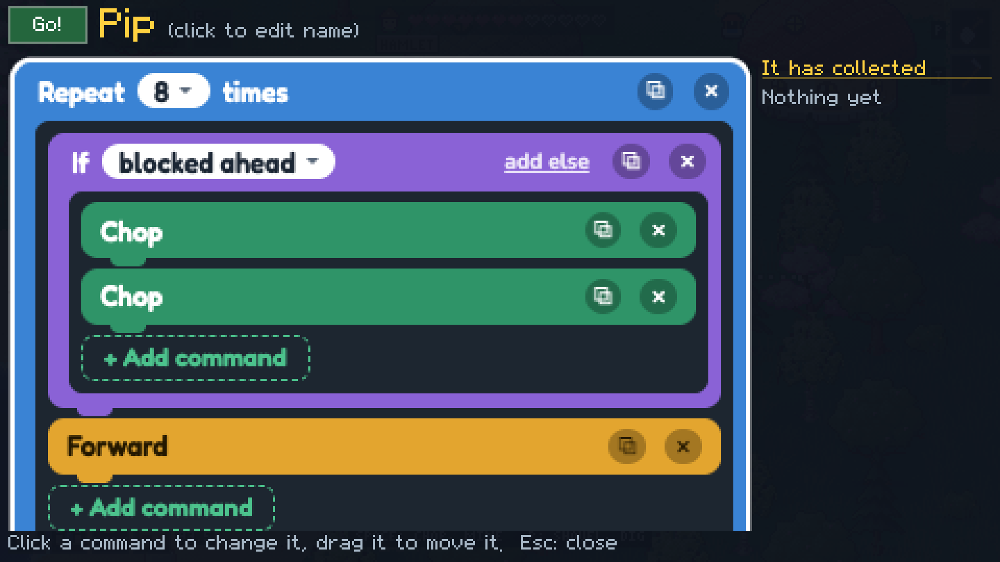
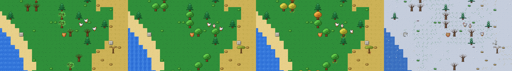

At the end of a new cat's welcome to Tabby Trails, the mayor hands it a turnip. It has two feet, a leaf on its head and a gold key in its back, and if you tell it what to do, in very small words, it will go and do it while you get on with something else.
They're called sproutlings. This one is Pip, which is the name the game gives your first one as soon as it has something to do (Bean and Spud are next in line). Pip's whole job in that clip is five commands long:

Repeat eight times: if something is in the way, chop it, then chop what's left of it, then take a step. A tree takes one chop and its stump takes the other, which is why there are two. When the commands run out a sproutling always walks back to where it was set down, and when the cat picks it up, everything in its bag flies to the chest after it.
One winding of the key is good for 100 steps and 20 swings, so a single turnip can only turn over so much of the countryside before it droops and has to be wound again. I like that about it.
How it thinks
The game flattens the stack of blocks into a plain list of steps and runs it on a machine so small that its whole state is a few numbers. So a sproutling halfway down a row can be saved with the world, or handed to the room when friends are playing, and it carries on from the step it was on.
The same machine can run without touching the world, and that gets used twice. The dotted line in front of Pip is the game running the program in its head to show where it would go. And when a program plants or paves, the sproutling runs it in its head first to count the seeds or pebbles it'll get through, and takes that many from your chest when you wind it up. Nobody has to pack a turnip's lunch.
The blocks were the one place I gave up on pixels. The game's bitmap font is fine for a hotbar and miserable for a screen full of commands, so the program is ordinary web text laid over the canvas, and everything around it is still drawn by the game.
This week
The screen used to have a little practice field for trying a program out. It's gone: to see what a program does, you set it going. A sproutling that's ready now wears a sign saying how to start it, since nothing about a turnip says "click me". And beacons have names, so a sproutling can be sent to any beacon standing, yours or a friend's, by what it's called.
If you'd like to boss a turnip about, the game runs in the browser, and the mayor will give you yours.
Also lately
The village has a bakery with a brick oven: wheat into dough, and six things to bake, from bread to a birthday cake.
Cave mouths come in five shapes now, and each one dresses for the ground it's on: moss on grass, icicles on the tundra.
A cottage the village built opens onto a round room, with eight ways of arranging the furniture.
There's a note card in the pause menu for telling me what's broken.
The marker that points to your village is a little well instead of a house.
Some nights in Tabby Trails, a little way off in the grass, there's a pink mushroom that wasn't there the night before. It glows a bit. If your cat walks over and eats it, the cat puffs up to six times its size, and for the next sixteen seconds the forest has a problem.
It's called a puffcap, and if a mushroom that makes you big sounds familiar, it should. A certain Italian plumber worked this out decades ago, and this is my small thank-you to him. The radio even speeds up to double tempo while you're big, the way his music hurries when time is running short, because it didn't feel right to borrow the mushroom and leave that behind.
For a while the giant cat was a polite giant. It stepped over the trees and everything was exactly as it had been once it shrank again, which was sweet, but it never quite felt like being enormous. So as of this week the paws count. Walk through a forest and the trees go over one after another, each falling away from the cat, and you come out the far side with a trail of stumps behind you and a hotbar full of wood. Rock holds out a little longer: it cracks under every step, and a stomp or two is what finally breaks a boulder apart.
How the trampling works
The nice surprise was how little of this needed building. The cat can already chop a tree and mine a rock with its claws, and all of that already existed: the tree leaning and going over, the stump it leaves, the wood flying to your hotbar, the way a friend playing with you sees it happen. A giant's footstep reuses every bit of it. Each time a paw comes down, the game looks at the patch of ground under the cat (it's the same oval as its shadow, about six tiles wide) and hits whatever is growing or lying wild in there, as if the cat had swung at each thing itself.
A tree goes in one hit. Rock takes one blow from a footstep and five from a stomp, which is why you can stroll across an outcrop and only chip it but two good jumps will break granite out. And because these are the same world changes a normal cat makes, there was nothing new to send to friends. Their game hears "this tree was chopped" just as it always has, and the stump grows back in three days like any other.
Two things needed some care. Ten trees falling at once shouldn't make ten sounds, so only the first tree, the first bush and the first rock under each step get a voice and the rest go quietly. And the tiny freeze the game does when you break something, which feels good on a single rock, turned walking through a forest into a stutter. Now only a stomp gets it.
The giant still leaves alone anything somebody built. Fences, walls, doors, furniture and everything belonging to a village get stepped over as before, so nobody loses a house to a friend who found a mushroom.
Getting small again
There was one problem from the first version that I'm still fond of. A giant can walk over anything, including the sea, so sixteen seconds later it might be standing somewhere a normal cat can't be. Before it shrinks, the game checks whether a small cat could stand right there, and if not it finds the nearest tile where one could and quietly slides the cat over to it while it shrinks. In the last three seconds the giant hiccups once a second and four little pink corners blink on the spot where it's going to land, so the pop doesn't catch you out halfway across a pond.
If you'd like to try it, the game runs in the browser. Head out into the plains, a forest or the savanna after dark and look for something pink in the grass. Playing on your own you'll find one puffcap; with friends a ring of four comes up, one each, and three small cats can ride on a giant's back.
Also lately
A new cat now arrives hanging from a bunch of balloons, and one of them bursts.
The forge, the music hall, the greenhouse and every cottage can be walked into, and they're all round rooms inside.
Wind blows across the grass, and tall grass bends with it and parts around the cats.
Water and lava each move as one surface now, with foam where the water meets the shore.
The sproutling has a wind-up key on its back that turns while its spring runs down.
Tabby Trails already had a bicycle. Twice as fast as walking, faster again on a street, a perfectly sensible way for a cat to get around.
So obviously I made a skateboard, which is slower. Four fifths of the bicycle, everywhere. By the numbers it's the worse item.
It can kickflip, though.
Press Space and the cat hops, the deck flips over under its paws (you can see the black underside go by, which I'm unreasonably pleased with) and it lands in a little puff of dust. Press again and the cat and the board spin all the way round together. They take turns, so if you hold Space it's flip, spin, flip, spin for as long as you like. That's the whole trick list. Two. Turns out two is plenty when it's a cat.
One thing for the multiplayer people: I don't send "this cat did a flip" to your friends. I just send how many tricks the cat has done so far. Odd ones are flips, even ones are spins, and every screen works out the rest by itself. (The count wraps at 250. It has to be an even number or the screens stop agreeing, which is the kind of thing I know now.)
The sunglasses in the clip have nothing to do with any of this. They're two copper ore, they're only for show, and the game's entire description of what they do is "VERY COOL." Look at the clip, though. It's not wrong.
The board is four wood, two iron ingots and two copper ingots at a village forge. It's all in the beta, which runs in the browser if you're curious. If you find something broken, tell me. That's what the beta is for.
Also lately
The galleon can turn. Eight headings now, and it stays moored the way you left it.
Six kinds of fish, and the fishmonger keeps a board of what's biting and where.
You can walk into the observatory and bother Professor Quill, who has thirteen things to say about the sky.
Narrow water freezes over in winter and a cat can walk across it.
The wolves don't howl anymore. There are also three tenths fewer of them. Unrelated.
Shores and the edges between biomes are ragged now.
This is the first post of the devlog. The plan is a short one every few days, about whatever is easiest to show.
I started Tabby Trails on September 21. Back then it was a cat in a field, in a window 256 pixels wide, with a rock to dig at.
I wanted to see what two weeks of work looks like, so I wrote a script. It checks out the last commit of each day, starts that version of the game, drops a new cat into the same world and takes a screenshot. The world is generated from a seed, so the same seed gives the same place every time. Mostly.
The clip above is those screenshots in order. About a week in, the field turns into a village, because villages got added and this cat happens to wake up in one. On October 4 the houses turn into acorns, and I'm keeping those.
The street lamps and windows turn on at night now:
And there are seasons:

It's an early beta and you can play it in the browser. If something's weird or broken, I'd like to hear about it. No rush.
Also lately
Crickets purr instead of click.
Caves have springs, lifts, ferries and crumbling bridges.
You can craft a raccoon suit. Also a frog suit.
Sproutlings: little wind-up helpers you program by stacking pieces.